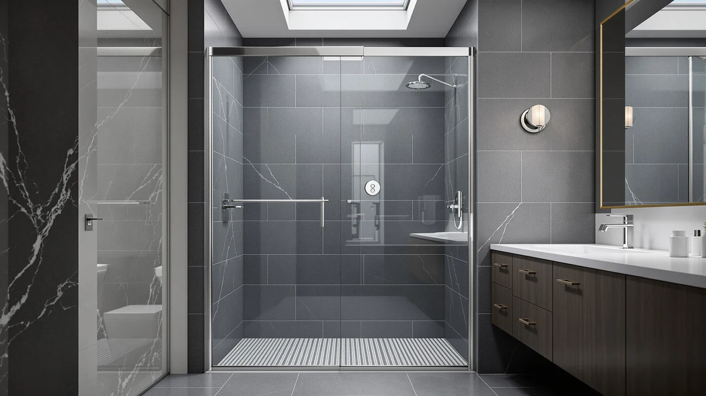

GETPRO Shower Door Double Review (2026): Worth It?
Prices and picks verified as of September 2026. Independent, reader-supported reviews.


Quick Answer
This GETPRO shower door double review looks at how the $291.49 aluminum-frame bypass door stacks up against three alternatives priced from $329.99 to $339.00 on glass, opening size, and finish. It's the least expensive door in this comparison, with an adjustable 56 to 60 inch width and a reversible install, though it also carries the thinnest documented glass certification and the shortest owner review history of the four.
Our pick: GETPRO Shower Door Double Sliding, $291.49 Check Price on Amazon
Bottom line: our top pick is the GETPRO Shower Door Double Sliding 56-60 in. W x 72 in. H at $291.49.
Things to Know Before You Buy
- At $291.49, the GETPRO Shower Door Double Sliding is the least expensive of the four doors in this comparison. The ENSO SENKA lists at $339.00, and both the KEIKI and the EliteEdge sit at $329.99.
- The width adjusts from 56 to 60 inches by trimming the rail, with a fixed 72 inch height. That range matches the ENSO SENKA but differs from the EliteEdge's taller 76 inch opening and the KEIKI's dedicated 36 by 36 inch corner footprint.
- The frame is aluminum in a brushed gold finish, built with a dual-curved top track designed to resist bending under repeated sliding.
- The bypass design is reversible for left or right wall installation, which matters if your plumbing sits on one particular side of the stall.
- The listing doesn't show a rating or review count yet, so there's no owner feedback history to weigh against the three alternatives below.
This GETPRO Shower Door Double review compares the $291.49 aluminum-frame bypass door against three alternatives that each cost more: the ENSO SENKA at $339.00, the KEIKI at $329.99, and the EliteEdge at $329.99. The GETPRO's defining features are its double sliding bypass panels, its adjustable 56 to 60 inch width, and a brushed gold aluminum frame, and those details shape every comparison in this review.
We wrote this GETPRO shower door double review because shoppers comparing bypass doors near the $300 mark often assume the cheapest option skips features the pricier ones include. The GETPRO sits at the bottom of this group on price, and that's why we weigh its adjustable width and reversible installation against three alternatives that add certified glass, a corner footprint, or a taller opening for $38 to $48 more.
Why You Should Trust Us
Ilane Tall covers bath fixtures for Best Shower Doors and has researched shower doors across frameless, corner, and bypass designs. For this GETPRO shower door double review, she compared the door's price, frame material, and adjustable width against three alternatives in a similar size range. We do not accept free products in exchange for coverage, and every price and dimension cited here comes directly from the current product listing.
Our editorial process treats an adjustable width or a reversible install as one factor among several, not an automatic win. Those details earn credit in this review, but the GETPRO still has to justify its place against three doors priced $38 to $48 higher. That approach shapes every comparison in this piece.
Our Research Experience
This GETPRO shower door double review is based on research, not physical use. We compared the GETPRO Shower Door Double Sliding against three alternatives using the specifications, pricing, and product listings available for each door. We do not run a fake testing lab, and we do not claim to have installed or lived with any of the doors covered here.
We looked closely at how the GETPRO's adjustable 56 to 60 inch width and aluminum frame compare to the ENSO SENKA's ANSI and SGCC certified glass, the KEIKI's dedicated corner footprint, and the EliteEdge's taller 76 inch opening, since those differences affect fit and durability in ways a price comparison alone would miss.
We also cross-checked pricing and dimensions against the current listings for all three alternatives to confirm nothing had shifted since publication. Where a data point wasn't available, such as a published rating or review count for the GETPRO, we noted that gap rather than estimate a number the listing doesn't provide.
This GETPRO shower door double review updates its pricing and specifications as listings change, so the figures above reflect what each seller published at the time we last checked. We treat a lower price as one data point among several rather than the deciding factor, since a $38 to $48 gap can disappear quickly if a listing runs a temporary discount.
Overview & Specs

GETPRO Shower Door Double Sliding
What we like
- The 56 to 60 inch adjustable width forgives a slightly imprecise measurement, since you can trim the rail to fit
- The reversible bypass design installs on either the left or right wall, which suits more bathroom layouts than a fixed-direction door
- At $291.49, it costs $38.50 to $47.51 less than every alternative in this comparison
Flaws but not dealbreakers
- The listing doesn't yet show a rating or review count, so there's no owner feedback history to weigh against the alternatives below
- The frame is aluminum rather than the stainless steel hardware on the EliteEdge alternative
- The glass isn't listed as ANSI or SGCC certified the way the ENSO SENKA's is
| Material | — |
| Size | 60'' W x 72'' H |
The GETPRO Shower Door Double Sliding is the least expensive door in this comparison: a $291.49 bypass build with an aluminum frame, a dual-curved top track, and a brushed gold finish. The width adjusts from 56 to 60 inches by trimming the rail, and the reversible design installs on either the left or right wall to fit more bathroom layouts.
That price sits $38.50 below the KEIKI and the EliteEdge, and $47.51 below the ENSO SENKA, the three alternatives covered below. The question is whether the GETPRO's adjustable width and reversible install make up for a frame and glass spec sheet that's lighter on certifications than the ENSO SENKA's.
What We Liked
The clearest strength in this GETPRO shower door double review is the price. At $291.49, it undercuts every alternative here by at least $38.50, and it still covers a standard 56 to 60 inch bypass opening rather than a narrower or corner footprint.
The adjustable width is also a practical advantage. Trimming the rail to fit anywhere from 56 to 60 inches gives you more room for measurement error than a fixed-width door, and the reversible left or right installation means the GETPRO fits more bathroom layouts than a door built for one direction only.
We also liked that the dimensions are stated plainly at 60 inches wide by 72 inches tall, so you have an exact number to check against your own opening before you buy. The dual-curved top track is built to resist bending, which matters for a door that relies on smooth rollers for its bypass motion.
What Could Be Better
This GETPRO shower door double review flags two clear gaps against the pricier alternatives below. The aluminum frame doesn't match the stainless steel hardware on the EliteEdge, and the glass isn't listed with the ANSI or SGCC certification that the ENSO SENKA carries. If certified glass matters to you, that's a real gap in the GETPRO's spec sheet.
The listing also hasn't accumulated a published rating or review count yet, so you won't find owner feedback history the way you might for a longer-standing product. And at a fixed 72 inch height, it's four inches shorter than the EliteEdge's 76 inch opening, which matters if your bathroom ceiling sits higher than average.
Who Is It For?
The GETPRO Shower Door Double Sliding makes the most sense if your opening measures close to 56 to 60 inches wide by 72 inches tall, and price matters more to you than certified glass or stainless steel hardware.
If your bathroom has a corner layout instead of a straight alcove, or your opening runs taller than 72 inches, the alternatives below cover those situations better than a straight bypass door like the GETPRO.
Buyers who want documented glass certification should look at the ENSO SENKA first, and anyone shopping a corner stall or a taller opening will find the KEIKI or the EliteEdge a closer fit than this GETPRO shower door. First-time buyers replacing an old bypass door often default to the cheapest listing without checking whether their stall's plumbing side matches a reversible design, so measure both the width and the direction your door needs to slide before you commit to any of the four options here.
Alternatives to Consider
The GETPRO Shower Door Double Sliding isn't the only option here, and the three doors below cover a similar size range or a different footprint at a higher price. Each one trades the GETPRO's low price for a corner layout, a taller opening, or certified glass, so weigh which trade-off matters most for your bathroom.

Editor's Pick
ENSO SENKA 56-60" W x
The ENSO SENKA lists at $339.00, $47.51 more than the GETPRO, for the same 56 to 60 inch adjustable width and 72 inch height plus ANSI and SGCC certified 1/4 inch glass and an anti-splash threshold, worth the extra cost if documented glass certification matters to you.
$339.00
Check Price on Amazon
Best Value
KEIKI 36"x36"x72" Corner Shower Door
The KEIKI runs $329.99, $38.50 more than the GETPRO, but it's built for a 36 by 36 inch corner stall instead of a straight alcove, the pick if your bathroom layout calls for a quarter-round corner door rather than a bypass design.
$329.99
Check Price on Amazon
Premium Choice
Shower Doors Frameless Shower Door
The EliteEdge costs $329.99, $38.50 more than the GETPRO, with a taller 76 inch opening and stainless steel hardware in a brushed nickel finish, worth considering if your ceiling height gives you room to spare over the GETPRO's 72 inch door.
$329.99
Check Price on AmazonFrequently Asked Questions
How much does the GETPRO Shower Door Double Sliding cost?
The GETPRO Shower Door Double Sliding lists at $291.49, the least expensive door in this comparison. The KEIKI and the EliteEdge both run $329.99, and the ENSO SENKA is the priciest at $339.00.
What size opening does the GETPRO Shower Door Double Sliding fit?
The GETPRO adjusts from 56 to 60 inches wide by trimming the rail, with a fixed 72 inch height. Measure your stall at multiple points before you order, since a bypass door depends on an accurate width.
Is the GETPRO worth it over the ENSO SENKA alternative?
It depends on whether certified glass matters to you. The ENSO SENKA costs $47.51 more but adds ANSI and SGCC certified glass and an anti-splash threshold, while the GETPRO covers the same 56 to 60 inch width for less. Check both listings' glass specs before you decide.
Final Verdict
This GETPRO shower door double review comes down to one trade-off: the lowest price in the group against three alternatives that each add something the GETPRO doesn't. If your opening measures close to 56 to 60 inches wide by 72 inches tall and price is your main concern, the GETPRO Shower Door Double Sliding earns its spot at $291.49, undercutting the ENSO SENKA, the KEIKI, and the EliteEdge by $38.50 to $47.51. If certified glass matters more than price, the ENSO SENKA covers the same footprint for $47.51 more. If your bathroom has a corner layout or a taller opening, the KEIKI or the EliteEdge fit those situations better than a straight bypass door. Either way, confirm your opening's exact width and height before you buy, since that's what separates GETPRO from the three alternatives in this review.